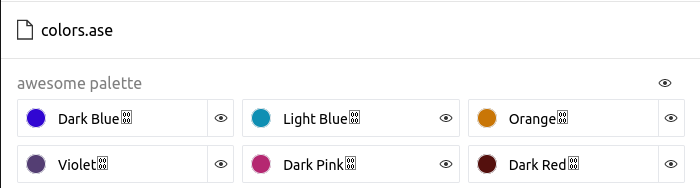

txt2ase¶
Introduction¶
Converts a given color palette file (see Color Palette File Specification) to Adobe .ase format.
New in version 0.3.0: Created the command with the name toase
Changed in version 0.3.1: Changed name of the command to txt2ase
Example¶
Given the file colors.txt with the following content (see Color Palette File Specification):
(49, 6, 210) Dark Blue
#0f8fb3 Light Blue
(201, 118, 6) Orange
(84, 62, 115) Violet
#b52871 Dark Pink
(84, 16, 13) Dark Red
Let’s convert it to a .ase file:
$ harmony txt2ase colors.txt -n "awesome palette"
And we generate a file colors.ase [1]:
Arguments¶
- colors-file¶
The Harmony color palette file (see Color Palette File Specification) to be converted to
.aseformat.
Options¶
- --palette-name <name>, -n <name>¶
Default: Palette
ID generated with the uuid4 algorithmsorted by harmony. The name of the palette to be written to the.asefile.Changed in version 0.4.2: Added short name
-n.Example¶
Given the file
colors.txtwith the following content (see Color Palette File Specification):(49, 6, 210) Dark Blue #0f8fb3 Light Blue (201, 118, 6) Orange (84, 62, 115) Violet #b52871 Dark Pink (84, 16, 13) Dark Red
Let’s convert to a
.asefile with the color palette nameawesome palette:$ harmony txt2ase colors.txt -n "awesome palette"
And we generate a file
colors.asewith the given palette name [1]:
- --help¶
Display the options and information about the command;
Footnotes